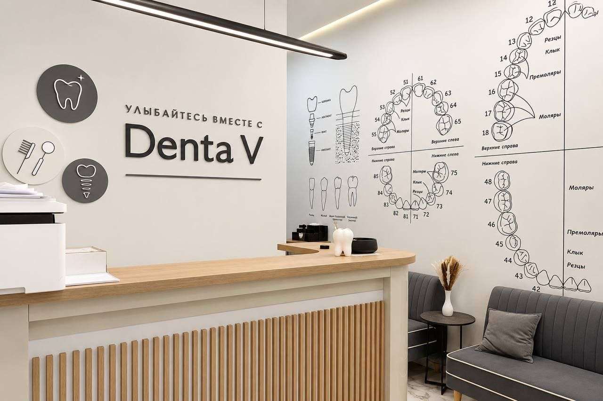
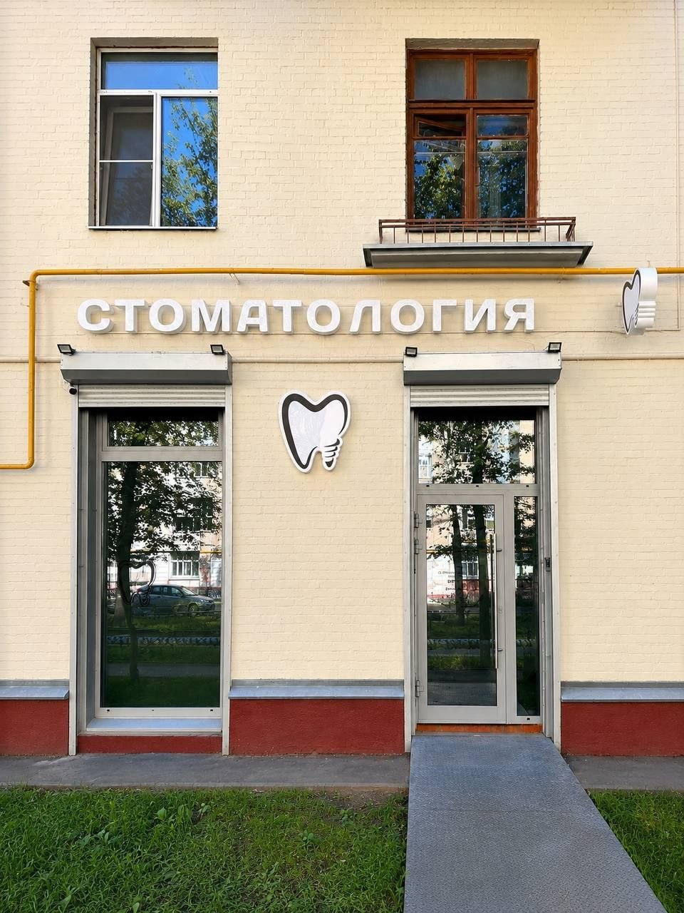
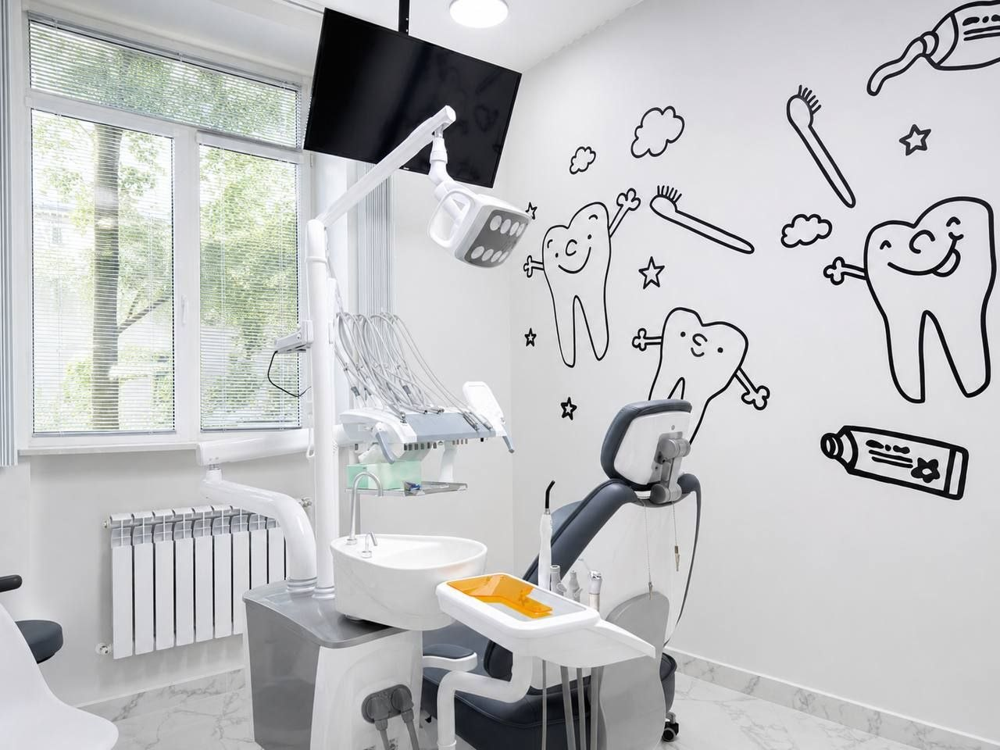
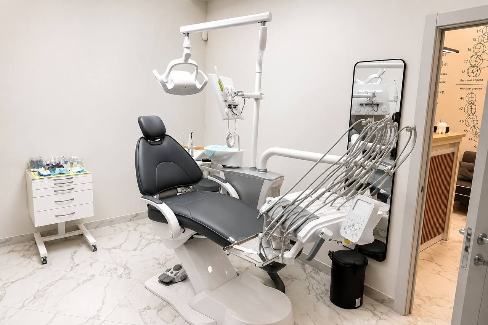
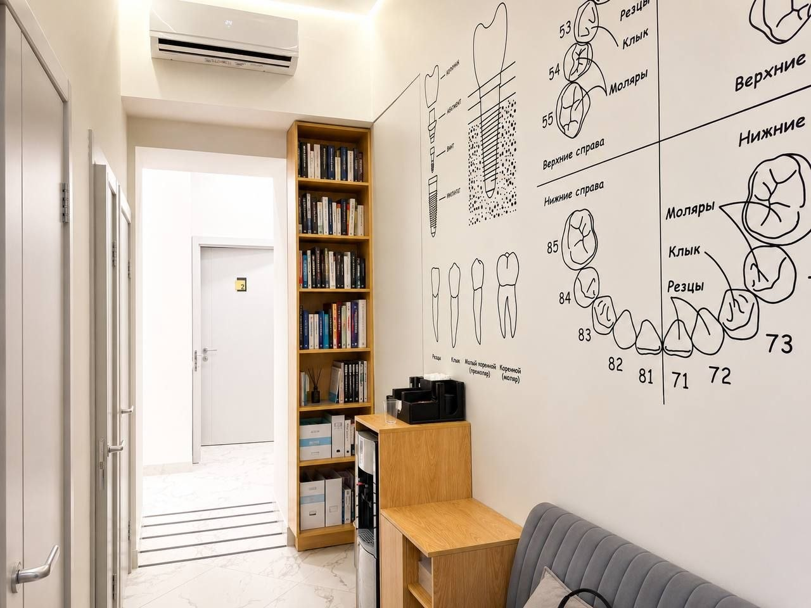
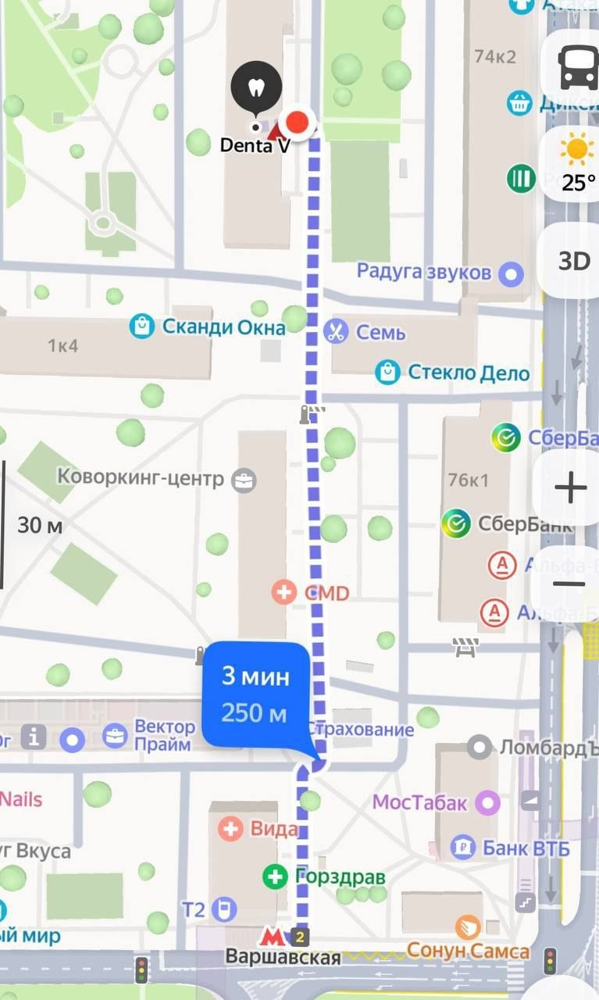

Ищите вывеску «Стоматология» у входа — рядом появится собственная вывеска Denta V. 3 минуты пешком от метро Варшавская.
Четыре основных направления — у каждого своя страница на сайте с ценами, врачами и понятным объяснением процесса.

Кариес, пульпит, эстетическая реставрация — без боли и с понятным планом на первом визите.
Смотреть раздел «Лечение» →От коронки до полной имплантации — консультация с 3D-диагностикой перед началом.
Смотреть раздел «Протезирование» →
Отдельный подход к первому визиту ребёнка — без слёз и с игровой адаптацией к креслу.
Смотреть раздел «Детям» →Чистка, отбеливание, разбор техники домашнего ухода на каждом визите.
Смотреть раздел «Гигиена» →Живые лица, а не стоковые фото в халатах — это то, что реально снижает тревожность у новых пациентов.

«Впервые пришла в новую клинику без стресса — врач всё объяснил до того, как включил инструмент»
